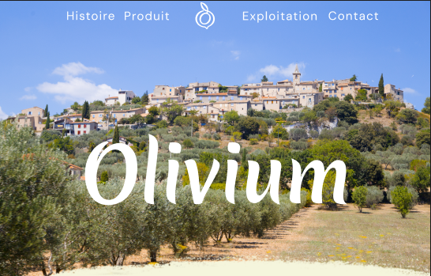

Olive Oil - Site de vente d'huile d'olive
Présentation du projet
Ce projet consiste en la création d'un prototype complet pour un site e-commerce dédié à la vente d'huile d'olive premium. L'objectif était de concevoir une expérience utilisateur fluide et élégante, reflétant la qualité et l'authenticité du produit proposé.
Démarche UX/UI
Le design a été pensé pour mettre en valeur le produit tout en facilitant le parcours d'achat. Une attention particulière a été portée à la navigation intuitive, à la présentation des informations produit et au processus de commande. Le prototype a été décliné en versions desktop et mobile pour garantir une expérience optimale sur tous les supports.
Objectifs du design
L'interface privilégie la clarté et l'élégance avec une palette de couleurs naturelles évoquant la Méditerranée et les oliveraies. Chaque élément a été conçu pour renforcer la confiance de l'utilisateur et encourager l'achat, tout en racontant l'histoire du produit et de ses origines.